A significant part of this project was developed collaboratively with Nana, as our individual proposal directions naturally connected with one another.
My own pitch primarily focused on:
- UI/UX design
- environmental data visualisation
- interaction systems
- accessibility and dashboard structures
Meanwhile, Nana’s proposal focused more heavily on:
- data archive systems
- organisational structures
- database accessibility and categorisation
Because these two areas were highly interconnected, we decided to combine our approaches into a shared design direction for TeleAgriCulture.
Based on the interaction systems, dashboard ideas, and 3D globe concepts developed during my design process, Nana then produced an initial high-fidelity mobile prototype in Figma to begin visualising how the system could function as a cohesive application.
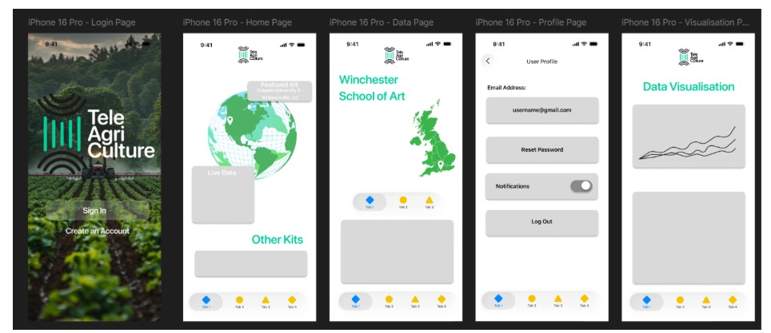
Figma Prototype Development
The Figma prototype translated earlier sketches and conceptual diagrams into a more refined mobile application interface.
The application, titled TeleAgriCulture, transformed the previously developed ideas surrounding:
- global navigation
- environmental monitoring
- spatial interaction
- dashboard visualisation
into a unified mobile user experience.
The prototype consisted of five connected interface screens.
Login Page
The login screen introduced the visual identity of the platform through:
- a full-screen agricultural landscape image
- a custom TeleAgriCulture logo
- translucent glassmorphism-style buttons
The use of real agricultural imagery helped immediately establish the environmental and farming context of the application while creating a more welcoming and less technical first impression.
Home Page
The home page implemented one of the project’s key concepts: the interactive globe interface.
At the centre of the screen was a stylised green-and-white 3D Earth model, directly inspired by the earlier globe experiments and particle-based spatial visualisation systems.
Additional interface elements included:
- Featured Kit recommendation cards
- Live Data sections
- Additional monitoring kits
- bottom navigation tabs
This page established the application as both a global exploration tool and a live environmental monitoring system.
Data Page
The data page represented the transition from global navigation into location-specific environmental data.
The interface displayed:
- geographic location information
- UK map visualisations with node markers
- category selection buttons for different datasets
- a large modular data display area
This structure directly reflected the earlier drill-down interaction logic:
World → Country → Location → Environmental Data.
The geometric category buttons also continued the project’s visual language of simplified symbolic interaction.
Profile Page
The profile page focused on basic user management and platform settings, including:
- account information
- password reset functions
- notification controls
- logout options
Although simpler than the other screens, this page helped establish the prototype as a believable and complete application ecosystem rather than a purely conceptual interface experiment.
Data Visualisation Page
The final page translated the previously developed dashboard concepts into a mobile-friendly visualisation system.
This interface included:
- line graph visualisations
- modular data cards
- reserved sections for environmental charts and sensor information
The page reflected the evolution from the earlier illustrated greenhouse concept into a more structured and professional dashboard system.
At the same time, the design still maintained:
- simplified visual hierarchy
- readability
- clear modular organisation
- accessible interpretation of environmental data
rather than relying purely on dense technical graphs.
Visual Identity and Colour Palette Development
One aspect of the prototype that I particularly liked was the login page designed by Nana. I felt that the interface successfully combined a strong sense of technological aesthetics with agricultural imagery, creating a visual style that felt both contemporary and aligned with the project’s identity.
The use of:
- full-screen agricultural photography
- minimal typography
- glassmorphism interface elements
- soft green highlights
created a clean and modern visual language that balanced themes of nature and digital technology effectively.
During our discussions, we decided to preserve the overall visual direction of the login page as the foundation for the wider application style.
However, after reviewing the remaining interface screens, we felt that some of the colour combinations across the application lacked consistency and visual cohesion. Certain interface elements competed too strongly for attention, while others did not fully align with the darker, more immersive aesthetic established by the 3D globe system.
As a result, we collaboratively developed a unified colour palette for TeleAgriCulture to create a more coherent visual identity across the platform.
TeleAgriCulture Colour Palette
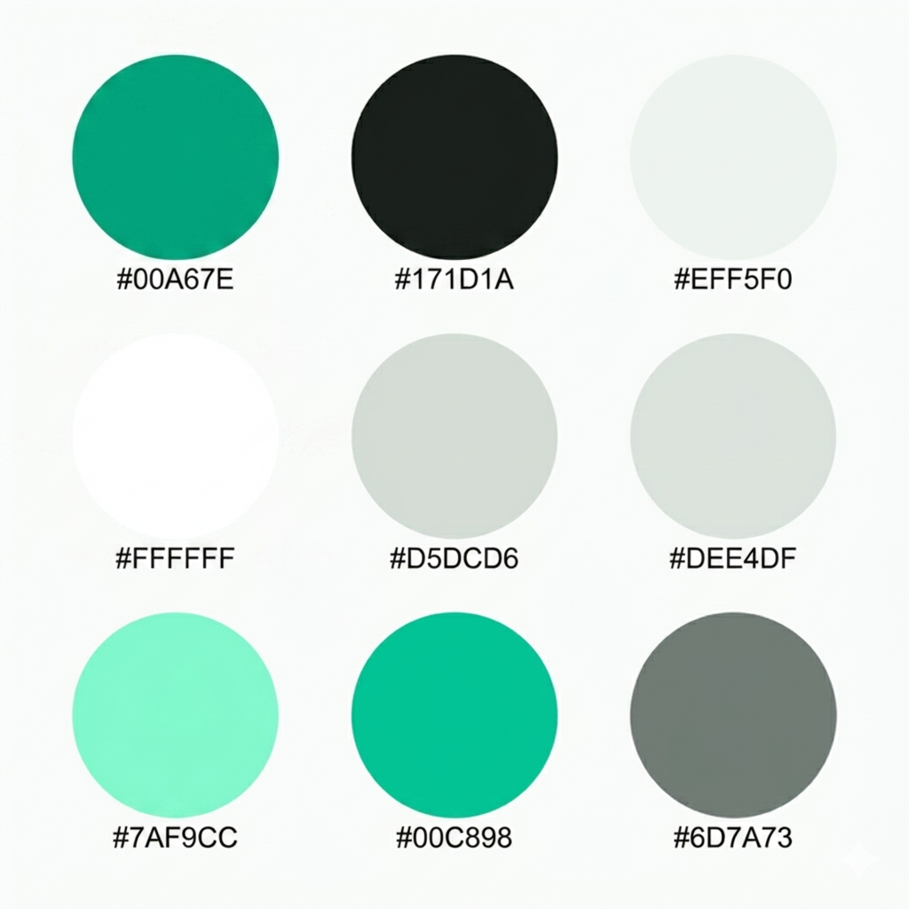
The final colour palette combined:
- environmental green tones
- dark technological neutrals
- soft grey-white interface colours
This palette was designed to visually merge ideas of:
- agriculture and ecology
- digital systems and technology
- environmental monitoring
- modern interface aesthetics
Primary Brand Colours
#00A67E — Deep Mint Green
This became the main primary brand colour.
It represents:
- healthy vegetation
- environmental growth
- ecological stability
and is intended for:
- logos
- primary buttons
- navigation highlights
- key interface accents
#00C898 — Bright Emerald Green
A brighter and more energetic green used for:
- active states
- interactive highlights
- selected navigation elements
- live system indicators
This colour helps create stronger visual focus and introduces a more futuristic technological feeling into the interface.
#7AF9CC — Fluorescent Soft Green
This lighter neon green adds a more digital and atmospheric quality to the system.
It is particularly suitable for:
- graph visualisations
- particle effects
- glow interactions
- environmental animation systems
- dashboard visual accents
This colour strongly connects to the visual identity of the 3D globe prototype.
Dark Interface Colours
#171D1A — Dark Green-Black
Rather than using pure black, the project adopted a deep green-tinted black tone.
This colour was inspired directly by the earlier 3D strategic globe prototypes and is used for:
- immersive dark backgrounds
- dashboard foundations
- data visualisation environments
- large-scale spatial interfaces
The subtle green tint helps maintain the connection between technology and environmental themes.
#6D7A73 — Muted Grey-Green
Used primarily for:
- secondary text
- inactive icons
- border lines
- supporting interface elements
This colour helps soften the interface and prevents visual fatigue caused by high-contrast dark themes.
Neutral UI Colours
The remaining white and grey tones were selected to support modern card-based UI systems and improve readability.
#FFFFFF
Used for:
- clean interface spaces
- cards
- readable contrast areas
#EFF5F0
A soft off-white with slight green undertones, used to reduce the harshness of pure white backgrounds while maintaining clarity.
#D5DCD6 and #DEE4DF
These light neutral greys are used for:
- placeholder cards
- input containers
- dashboard modules
- secondary panels
They help establish visual hierarchy while keeping the interface minimal and modern.
Design Reflection
The development of this colour palette helped unify the visual identity of TeleAgriCulture across both the:
- 3D globe interaction system
- modular environmental dashboard
The final palette creates a balance between:
- technological aesthetics
- environmental themes
- readability
- contemporary UI design trends
This collaborative design process also helped strengthen consistency across the application, ensuring that the interface felt cohesive rather than fragmented across different pages and interaction systems.
Refining the Final Interface Design
Using the newly established TeleAgriCulture colour palette, I further refined Nana’s original Figma prototype in order to create a more cohesive and visually unified system.
This stage focused on:
- improving colour consistency
- strengthening visual hierarchy
- enhancing readability
- aligning the interface more closely with the futuristic 3D globe aesthetic developed earlier in the project
The resulting design became a much more polished ultra high-fidelity (Ultra Hi-Fi) prototype that combined:
- environmental storytelling
- dashboard usability
- spatial interaction systems
- contemporary mobile UI aesthetics
At this stage, the project successfully translated the original hand-drawn concepts into a commercially believable digital product.
Final High-Fidelity Mobile Prototype
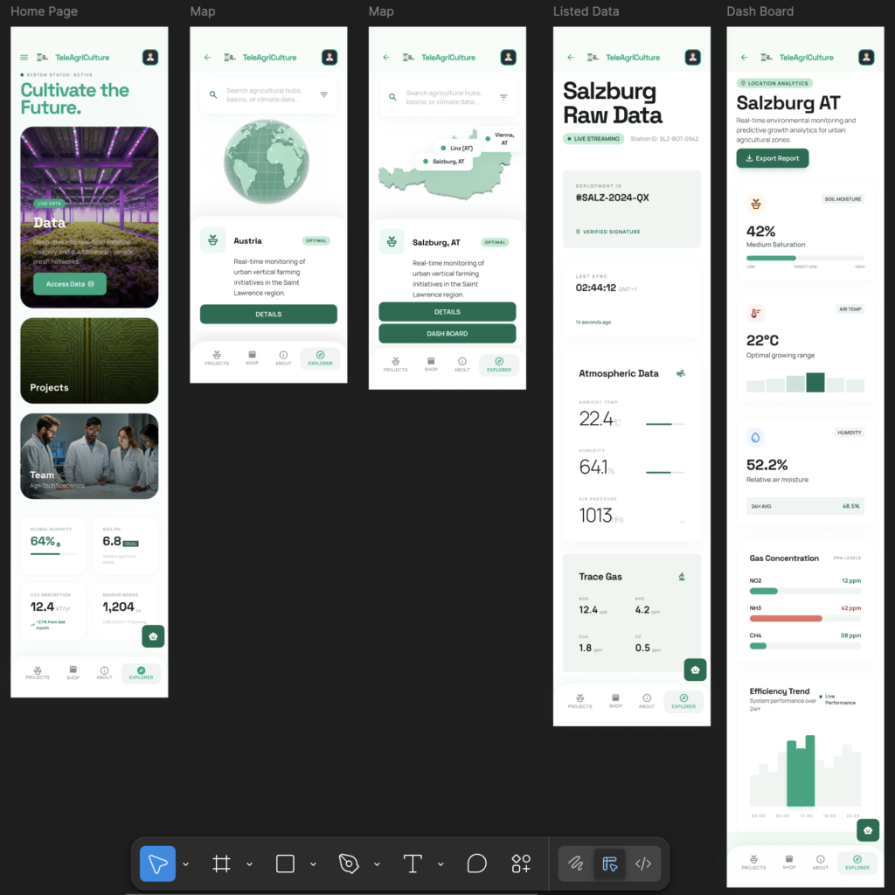
The final prototype fully integrated the project’s earlier interaction logic:
World → Country → City → Raw Data → Dashboard Visualisation
while maintaining a clean and modern mobile-first interface structure.
The design uses the established green-and-dark colour palette throughout the application, reinforcing the connection between:
- ecology
- environmental monitoring
- digital systems
- futuristic technological aesthetics
The final prototype consisted of five major interface screens.
Home Page
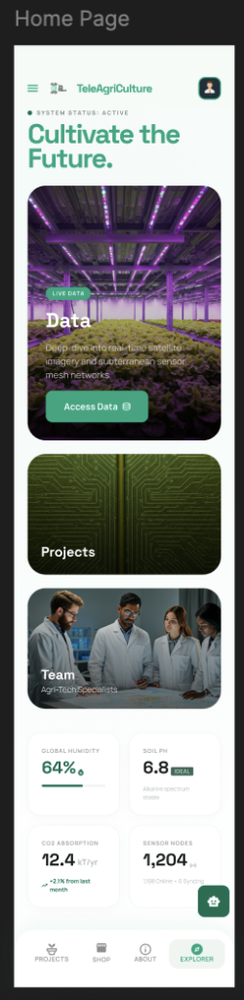
The home page acts as the primary entry point into the TeleAgriCulture ecosystem.
At the top of the interface, the slogan:
“Cultivate the Future.”
immediately establishes the project’s identity as a forward-looking agricultural technology platform.
The page is organised into several large visual content cards:
Data
A card displaying a real indoor vertical farming environment illuminated by purple grow lights. This section acts as the main gateway into environmental monitoring systems.
Projects
A technology-focused section using green PCB circuitry imagery to represent sensor networks, IoT systems, and computational infrastructure.
Team
A collaborative research-focused section showing agricultural researchers and scientists working with plants and environmental technologies.
Global Overview Metrics
At the bottom of the home page, the interface introduces global environmental statistics, including:
- average humidity levels
- soil pH values
- CO₂ absorption metrics
- total online sensor nodes
This creates a stronger sense of planetary-scale environmental monitoring and reinforces the global scope of the platform.
Map Interface — Global View
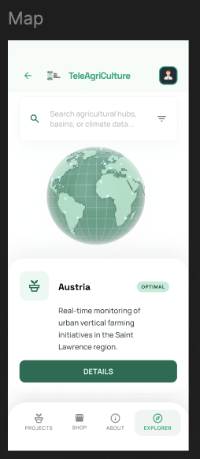
The second screen develops the previously explored 3D globe interaction system into a functional mobile navigation interface.
The page includes:
- a searchable environmental hub system
- an interactive 3D Earth model
- expandable environmental data cards
When users select a location such as Austria, the interface displays a contextual environmental status card labelled “OPTIMAL”, alongside descriptive agricultural information and navigation controls.
This transforms the globe from a purely visual object into a navigable environmental interface.
Map Interface — Country-Level View
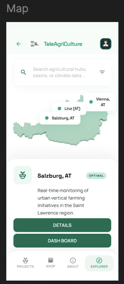
The third screen continues the drill-down interaction logic explored during earlier sketches.
Instead of the full globe, the interface transitions into a country-specific geographic visualisation showing:
- Austria’s map outline
- key city nodes including Vienna, Linz, and Salzburg
- selectable environmental locations
Selecting a city updates the contextual information panel and provides navigation options to:
- detailed data views
- dashboard systems
This interaction model creates a clearer relationship between global environmental systems and localised sensor conditions.
Raw Data Interface
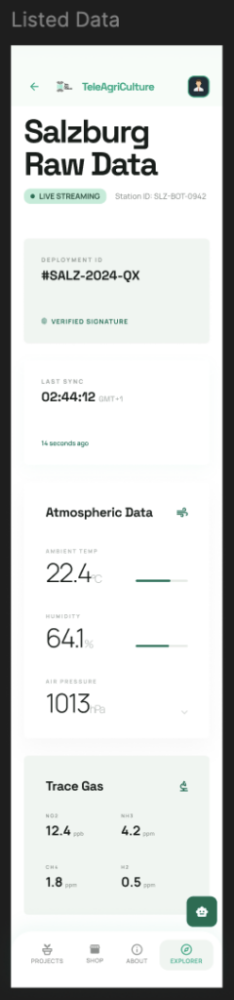
The fourth screen introduces a structured raw data page for expert users and technical analysis.
Unlike earlier visual storytelling concepts, this interface intentionally preserves:
- precise numerical datasets
- live sensor streams
- technical environmental readings
The page includes:
- atmospheric measurements
- humidity and pressure values
- gas concentration data
- deployment and sensor identification information
This design decision reflects one of the project’s core principles:
environmental data should remain accessible both to non-specialist users and to technical users requiring deeper analytical access.
Final Dashboard System
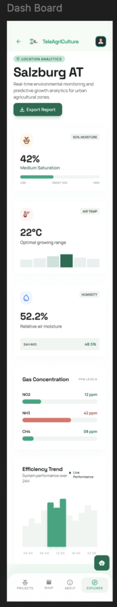
The final dashboard page represents the culmination of the project’s visualisation research and interaction development.
This screen translates the earlier hand-drawn dashboard concepts into a refined professional monitoring interface.
The dashboard includes:
- soil moisture tracking
- atmospheric temperature monitoring
- humidity analysis
- gas concentration comparisons
- efficiency and performance trends
The earlier “floating gas cloud” idea evolved into highly readable horizontal bar charts and structured modular data cards.
At the same time, the system still retains:
- strong iconography
- visual hierarchy
- colour-coded environmental states
- simplified interpretation systems
making the interface readable for both specialists and non-specialists.
Design Reflection
This final prototype demonstrates how the project evolved from speculative sketches and conceptual interaction diagrams into a cohesive digital product system.
The combination of:
- 3D environmental navigation
- structured dashboard interfaces
- raw data accessibility
- modern mobile UI aesthetics
- environmental storytelling principles
allowed TeleAgriCulture to become more than a standard agricultural dashboard.
Instead, the project developed into a hybrid platform that combines:
- environmental monitoring
- spatial exploration
- data accessibility
- and narrative-driven interaction design.
The final prototype also reflects the importance of collaboration within the project, combining:
- my focus on interaction systems, visual language, and environmental storytelling
with - Nana’s implementation work, archive systems, and Figma prototyping process.
Shop Section Development Hardware Ecosystem Integration
Following the positive feedback from Julian on the overall system design, particularly the visual language, layout structure, and consistency across the TeleAgriCulture interface, an additional requirement was introduced: the inclusion of a Shop section within the platform.
This expanded the project beyond a pure data visualisation and monitoring system into a more complete hardware–software ecosystem, where users can not only observe environmental data but also directly acquire the physical tools required to extend and improve their monitoring systems.
Design Approach
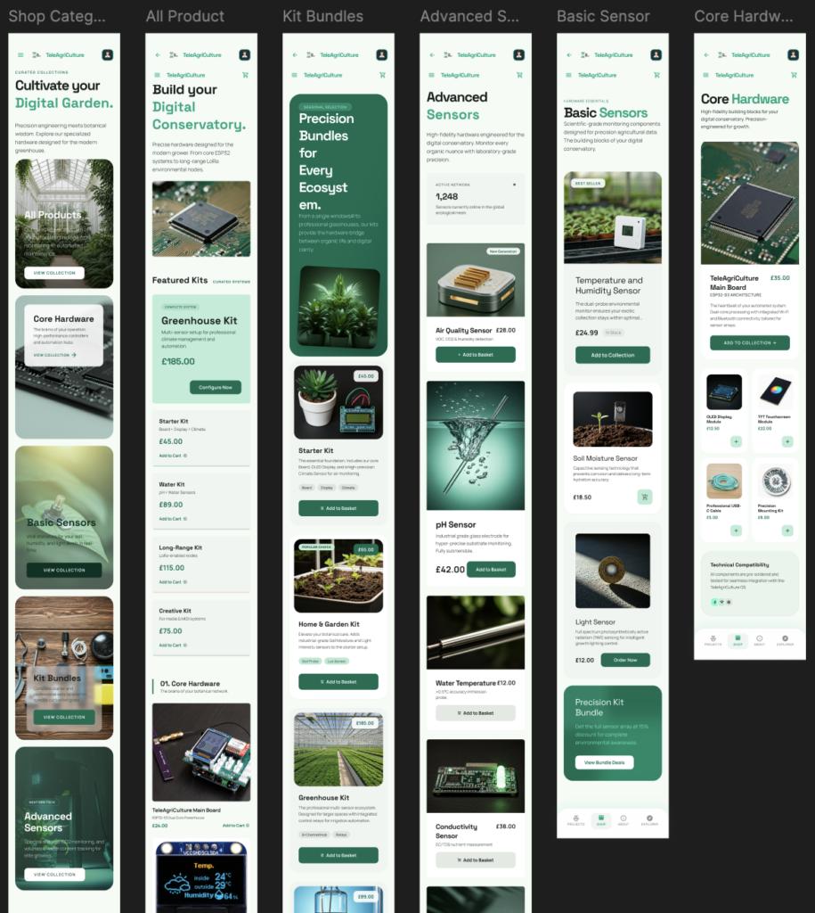
To maintain consistency with the existing UI system, the shop interface was designed using the same:
- green eco-tech colour palette
- modular card-based layout system
- mobile-first vertical scrolling structure
- product-driven visual hierarchy
This ensured that the shopping experience felt like a natural extension of the TeleAgriCulture platform rather than a separate commercial module.
Shop Structure and Navigation Logic
The shop was organised into five core categories to support scalability and flexibility, as the final product range is still undefined:
- All Products
- Kit Bundles
- Advanced Sensors
- Basic Sensors
- Core Hardware
This structure allows users to quickly filter and navigate between different levels of system complexity, from beginner-friendly kits to professional-grade agricultural sensing infrastructure.
Category-Based Design System
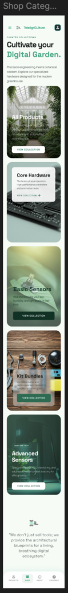
All Products
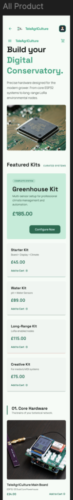
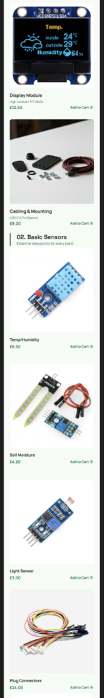
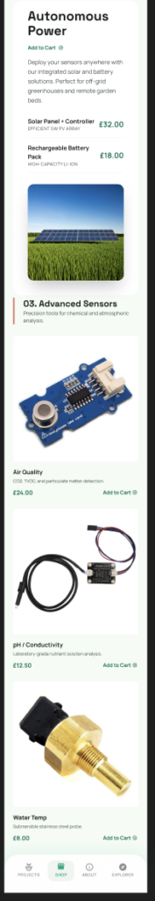
This section acts as the main entry point to the hardware ecosystem, containing all other categories within the shop.
It aggregates the full range of products across the system, including featured agricultural kits, starter systems for new users, long-range and specialised monitoring kits, and core hardware components.
The layout is designed to support both exploration and direct purchase, allowing users to quickly browse the entire ecosystem before navigating into more specific product categories.
Kit Bundles
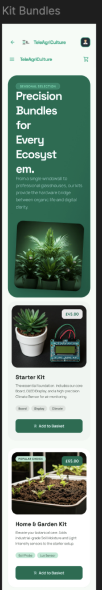
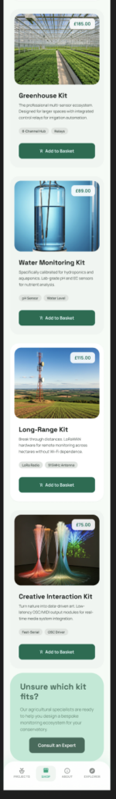
This category focuses on pre-configured systems designed for different environmental use cases, such as:
- home and garden environments
- greenhouse-scale farming
- professional agricultural setups
- creative sets
Each bundle combines multiple sensors and hardware components into a unified system, lowering the barrier for non-technical users.
Advanced Sensors
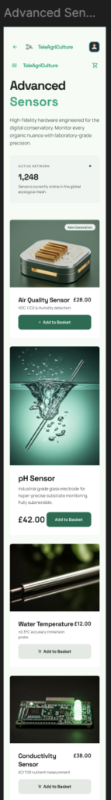
This section is aimed at professional users requiring higher precision environmental monitoring.
It includes sensors such as:
- air quality and greenhouse gas detection sensors
- pH monitoring systems
- water temperature probes
- conductivity and nutrient analysis sensors
This reflects the earlier dashboard and raw data visualisation system, where more complex environmental variables such as NO₂, CH₄, and NH₃ were introduced.
Basic Sensors
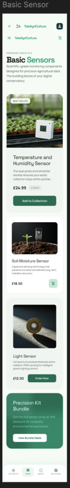
The basic sensor section provides essential environmental monitoring tools, including:
- temperature and humidity sensors
- soil moisture sensors
- light and PAR sensors
These components correspond directly to the core metrics used throughout the system’s data visualisation and dashboard design.
They are intended for general users, educational contexts, and entry-level installations.
Core Hardware
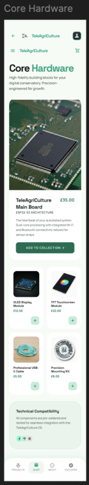
This section presents the foundational infrastructure of the TeleAgriCulture system.
It includes:
- main control boards (e.g. ESP32-based systems)
- display modules
- communication hardware
- mounting and connection accessories
This layer represents the technical backbone of the entire platform, enabling all sensor data collection and network communication.
Interaction Logic — Closing the System Loop
The introduction of the shop creates a closed-loop ecosystem within TeleAgriCulture, connecting data interpretation with physical system expansion.
The platform now operates through two interconnected flows:
1. Exploration Flow (Data → Insight)
Users explore:
World → Country → City → Raw Data → Dashboard Visualisation
This allows them to identify environmental conditions, detect issues, and understand system performance.
2. Expansion Flow (Insight → Hardware)
When users identify missing data or system limitations, they can move directly to:
Shop → Sensor Purchase → System Upgrade → Updated Data Visualisation
This creates a continuous feedback loop between:
- environmental monitoring
- system improvement
- hardware expansion
Design Outcome
The Shop section transforms TeleAgriCulture from a standalone environmental monitoring interface into a full-stack smart agriculture ecosystem, combining:
- environmental data visualisation
- spatial interaction systems
- IoT hardware infrastructure
- modular product-based expansion
This significantly strengthens the conceptual depth of the project by bridging:
data → interpretation → action → system evolution
Bottom Navigation & Extended System Pages
Building on the core Explore and Shop sections, I designed a consistent bottom navigation system consisting of four main modules: Explore, Shop, Project, and About. This structure ensures that users can clearly understand the system’s functionality at any point of interaction and can seamlessly navigate between data exploration, hardware acquisition, project documentation, and contextual information.
After completing the core interaction flows, I extended the design language across the remaining sections of the platform (Team, About, and Project pages). This allowed the prototype to become a fully coherent system rather than isolated screens, ensuring that every navigation entry point is functional and visually aligned with the overall design direction.
The purpose of this extension was to create a fully navigable prototype, where each button in the bottom bar leads to a meaningful and contextually designed page, reinforcing usability and system clarity during interaction testing.
About Page
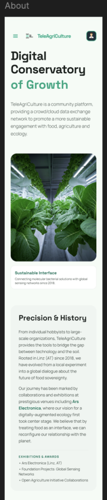
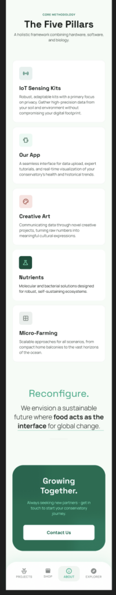
The About section communicates the conceptual foundation and historical background of TeleAgriculture. It presents the project as a “Digital Conservatory of Growth”, explaining its origin, research context, and international collaborations, including references to exhibitions such as Ars Electronica.
It also introduces the Five Pillars framework, which defines the system’s interdisciplinary structure:
IoT sensing kits, the application layer, creative interpretation of data, ecological/nutritional systems, and scalable micro-farming approaches.
This page positions the project not only as a technical platform, but also as a cultural and ecological initiative focused on rethinking the relationship between food, data, and environmental systems.
Team Page
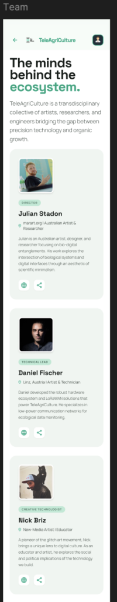
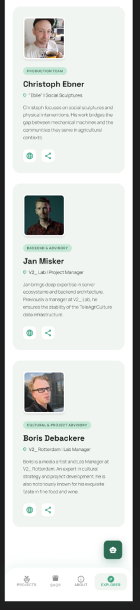
The Team page presents the interdisciplinary structure behind TeleAgriculture, combining artists, engineers, researchers, and system architects. Key contributors such as Julian Stadon (Project Director), Daniel Fischer (Technical Lead), and Nick Briz (Creative Technologist) highlight the hybrid nature of the project, where artistic research and technical development operate in parallel.
This reinforces the idea that the system is not only a technological infrastructure, but also a collaborative research platform that connects ecological thinking with digital media practice.
Project Page
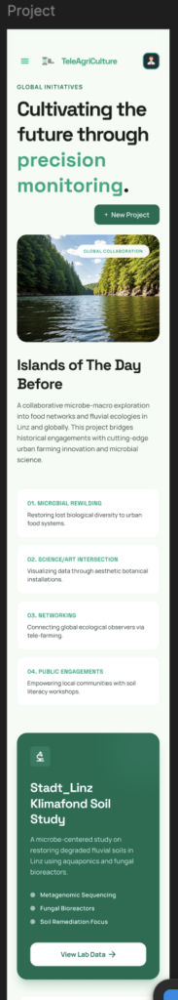
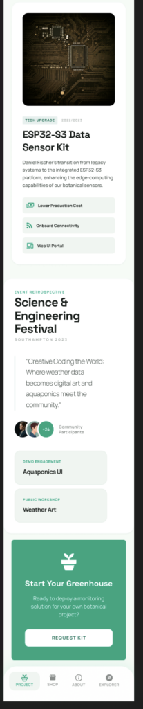
The Project section functions as a case study and research archive, documenting real-world applications, experimental deployments, and system upgrades.
It includes examples such as ecological research initiatives in Linz, microbial rewilding studies, and ESP32-S3 hardware upgrades, as well as public engagement events like science and engineering festivals.
This page emphasises the evolutionary nature of the system, showing how TeleAgriculture operates as an ongoing, expandable ecosystem rather than a fixed product.
Final Reflection
By extending the same visual and interaction language across Explore, Shop, Project, and About sections, the prototype becomes a fully integrated ecosystem rather than a set of isolated UI screens. This ensures consistency in user experience while also allowing each section to serve a distinct conceptual function within the broader TeleAgriculture system.
The complete bottom navigation system therefore acts as the structural backbone of the application, supporting both usability and narrative clarity across all levels of interaction.
This project was developed collaboratively with Nana, and the combination of our two contributions significantly strengthened the overall coherence and completeness of the TeleAgriculture prototype.
While I focused primarily on the UI structure, interaction flow, and system architecture across Explore, Shop, Project, and About sections, Nana extended the platform by developing the User Profile and AI Bot components. These additions were essential in moving the system beyond a static interface into a more personalised and responsive experience.
The User Profile section introduces a layer of user-centred interaction, allowing users to manage their identity and preferences within the system. Meanwhile, the AI Bot adds an intelligent interface layer that supports navigation, interpretation of data, and contextual guidance across the platform.
Working together allowed us to align both system-level design thinking and user-level interaction needs, ensuring that the final prototype functions as a more complete ecosystem rather than isolated features. It also helped reinforce the idea that TeleAgriculture is not only a data platform, but a responsive, evolving system shaped by both users and intelligent agents.
Link to figma board: https://www.figma.com/design/zzuGSFXBiE8gLKPRHud4Cd/TeleAgriCulture?node-id=0-1&t=ER6MtF5ExuEMhU4U-1
Link to prototype: https://www.figma.com/proto/zzuGSFXBiE8gLKPRHud4Cd/TeleAgriCulture?node-id=0-1&t=ER6MtF5ExuEMhU4U-1